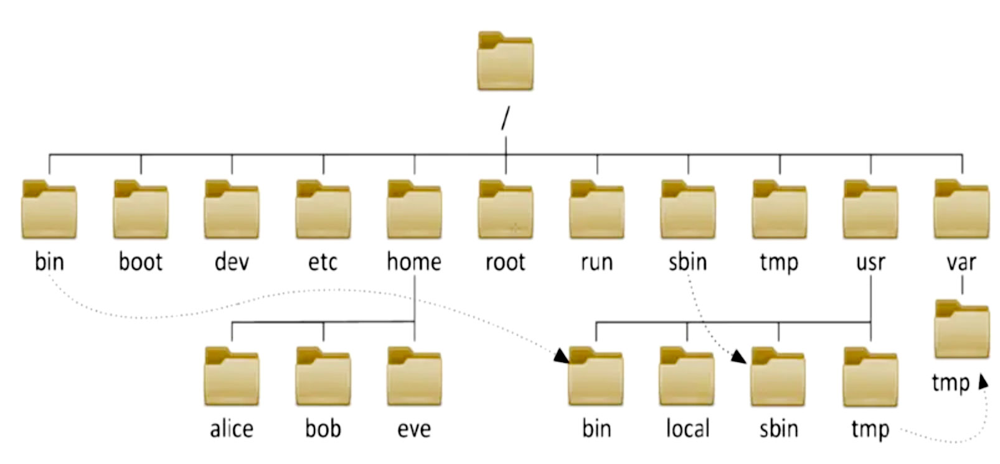
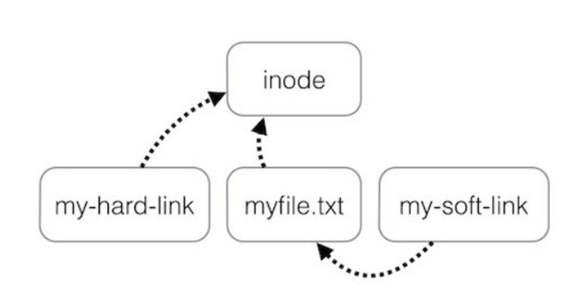
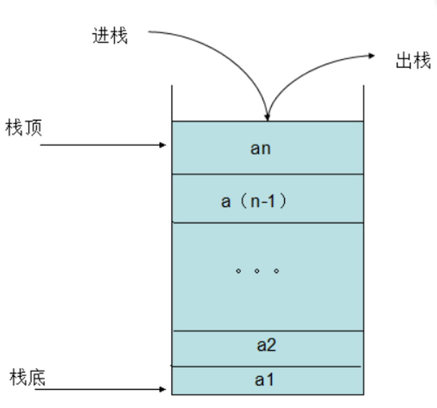
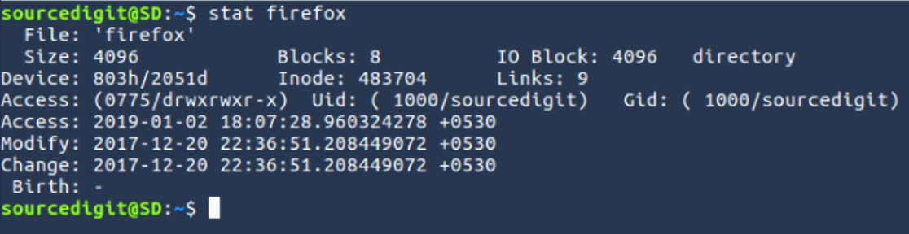
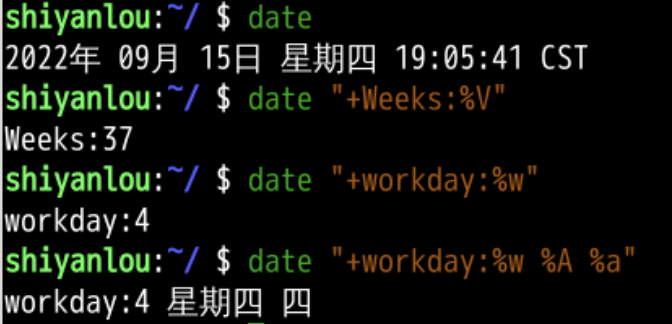
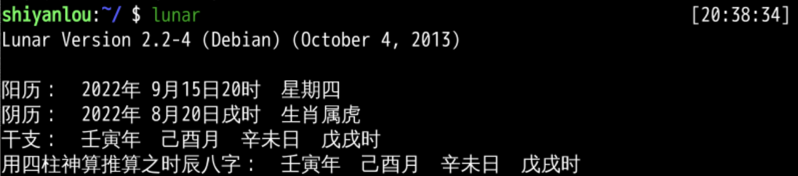
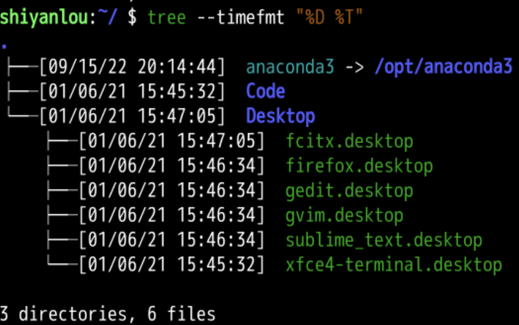
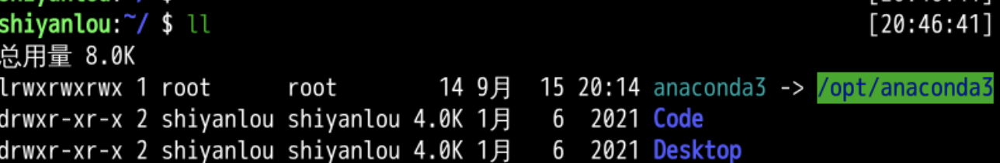
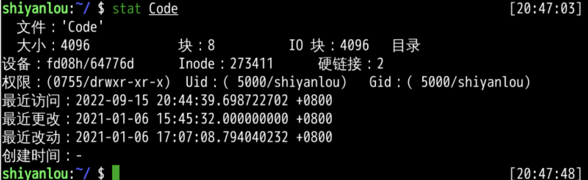

阴历(lunar)
回忆
- 上次我们研究的tree
- 是一个查询递归查询文件夹结构的命令
- tree 有一些参数
- 只遍历路径 -d
- 控制路径层级 -L
- 控制匹配模式 -P
- 控制路径符合匹配模式 --matchdirs
- 控制不显示空路径 --prune
- 控制不匹配模式 -I
- 遍历符号链接 -l
- 这部分实验我们学了很多
- 这次总结一下？
文件和文件夹的基本操作
- 新建
- mkdir
- md = mkdir -p
- 复制
- cp
- 删除
- rmdir
- rm
-
改名
- mv
-
这些命令有一些类似的参数
- -f 强制
- -i 交互式
- -r 递归文件夹
- -n 不覆盖
- -u 更新
- -v 介绍细节
-
有了这些我们就可以构建出复杂的文件结构
一年四季
- 建立文件夹层次结构
- 一年分四季
- 每一季分成3个月
- 每个月大概30天
- 在路径之间可以跳转

- 文件可以建立链接(link)
- 文件夹可以建符号链接(symboliclink)
链接
- 链接分两种
- 硬链接 hard link
- 符号链接 symbolic link

- 硬链接
- 直接指到文件所指的inode
- inode被指数加一
- inode指向具体的存储块(block)
-
符号链接
- 指向文件
- 如果文件删除
- 则符号链接失效
-
路径很多之后
- 可以有路径堆栈
路径堆栈
- dirs
- pushd
- popd

- 可以通过cd -n进入路径
文件详细信息stat
- 可以显示文件的各种元数据

- 有四个和时间相关
- access 读取时间
- modify 修改时间
- change 状态变化时间
- birth 创建时间 一般为-
时间日期
- date是基于epoch的

- 可以输出各种日期形式
日历
- cal 可以输出日历
- lunar可以进行阳历阴历转化

可以控制输出文件的时间格式
- 观察

- --time=atime
- access 上次读取时间
- --time=ctime
- change 上次状态(status)变化时间
- 不设置--time
- modify 上次文件本体修改时间
- 和ls很像的一个文件查询工具叫做tree
- 他们有很多共性
tree
- 都可以对文件夹递归遍历
- ls -R
- tree
- 都可以显示隐藏文件
tree -als -a
- 都支持通配符
tree -P *2*ls *a*
- 容量都可以人类可读
tree -hls -h
- 输出时间都可控
tree --time-fmt "%D %T"ls --time-style=+"%D %T"

总结
- 我们可以操作文件和文件夹了
- 复制 cp
- 新建 mkdir
- 删除 rm
- 改名移动 mv
- 我们还可以查询文件和文件夹
- 列表 ls
- 递归查询文件夹 tree
- 详细信息 stat



- 这里值为shiyanlou的uid到底是什么呢？ 🤔
- 下次再说👋